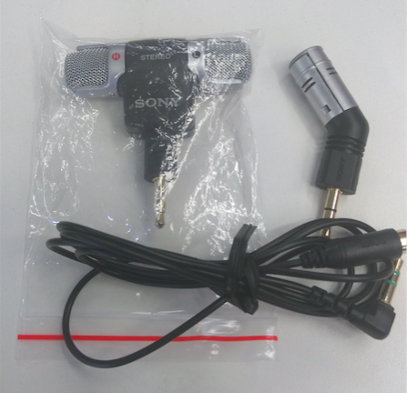
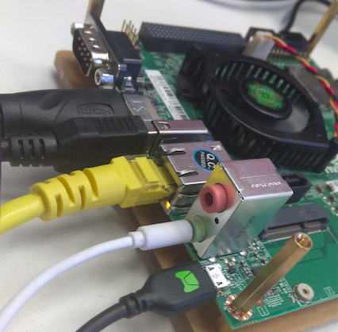

Jetson TK1 麦克风 SONY ECM-DS70P 模块
[TOC]
TK1 MicroPhone SONY ECM-DS70P 模块实物图

安装
在Jetson TK1硬件上音频处，上面的粉色是话筒，下面的绿色是听筒。

若Jetson TK1的音频不能用，在终端输入以下命令即可：
amixer cset name="Stereo ADC MIXL ADC2 Switch" 0
amixer cset name="Stereo ADC MIXR ADC2 Switch" 0
amixer cset name="Int Mic Switch" 0
amixer cset name="ADC Capture Switch" 1
amixer cset name="RECMIXL BST1 Switch" 0
amixer cset name="RECMIXR BST1 Switch" 0
amixer cset name="RECMIXL BST2 Switch" 1
amixer cset name="RECMIXR BST2 Switch" 1
amixer cset name="Stereo ADC L1 Mux" "ADC"
amixer cset name="Stereo ADC R1 Mux" "ADC"
amixer cset name="Stereo ADC MIXL ADC1 Switch" 1
amixer cset name="Stereo ADC MIXR ADC1 Switch" 1
amixer cset name="Stereo ADC MIXL ADC2 Switch" 0
amixer cset name="Stereo ADC MIXR ADC2 Switch" 0
amixer cset name="IN1 Mode Control" "Single ended"
amixer cset name="IN2 Mode Control" "Single ended"
amixer cset name="Mic Jack Switch" 1
验证
录音
arecord demo.wav按
Ctrl+C终止录音播放
aplay demo.wav
另外，使用 sox 可同时录制麦克风和系统声音。